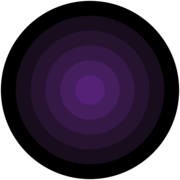
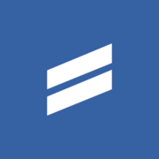
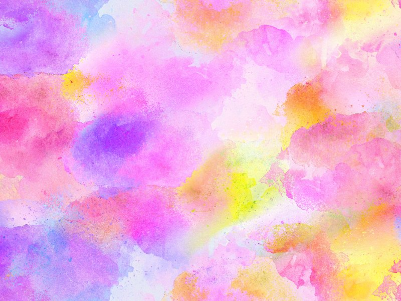
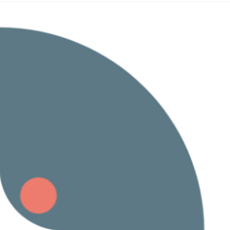

⚜️
パターン
プロジェクトの背景やテクスチャとして使用するとき最適なパターンツール






SVG Backgrounds
SVGファイルは5キロバイトの近くと軽量で、フルスクリーンの高解像度を可能にし、すべてのモダンブラウザでサポートされています。
Contribute by Keisuke Kuirbara
Black
図形とライトを使用した壁紙シリーズ。 Cinema 4Dを使用しており、スマートフォンとデスクトップ用にレンダリングされた高解像度画像です。
Contribute by Keisuke Kuirbara
Subtle Patterns
Toptalが提供する、次のウェブプロジェクトのための無料テクスチャ。
Contribute by Keisuke Kuirbara
Texturer
3Dモデリングのための無料テクスチャ。テクスチャリング、フォトショップ、ゲーム開発など、すべての画像は個人および商用利用は無料です。
Contribute by Keisuke Kuirbara
Pattern Library
最も才能のあるデザイナーが共有するパターンは、あなたのデザインで自由に使用できます。
Contribute by Keisuke Kuirbara
Texture King
無料で高解像度。Texture Kingは、個人および商用利用のための高品質なテクスチャを備えています。
Contribute by Keisuke Kuirbara
Transparent Textures
透明なテクスチャを大規模に選択できます。
Contribute by Keisuke Kuirbara
Patternico
Photoshopの魔法を使わず、シームレスなアイコンパターンをすばやく簡単に作成できる便利なツールです。
Contribute by Keisuke Kuirbara
Pixeden
デザインプロジェクトを素晴らしいスタイルで際立たせる、無料のグラフィックとウェブの背景を備えています。
Contribute by Keisuke Kuirbara
Twisted Polygons
プロットするためのポリゴンSVGを生成するためのプロジェクトです。
Contribute by Keisuke Kuirbara
Textures4Photoshop
無料の高品質テクスチャ
Contribute by Keisuke Kuirbara
paaatterns
すべてがベクター形式の、美しいパターンが無料でコレクションされています。
Contribute by Keisuke Kuirbara